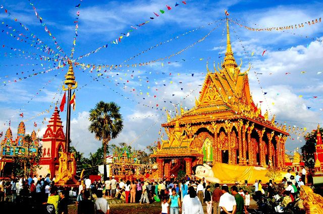
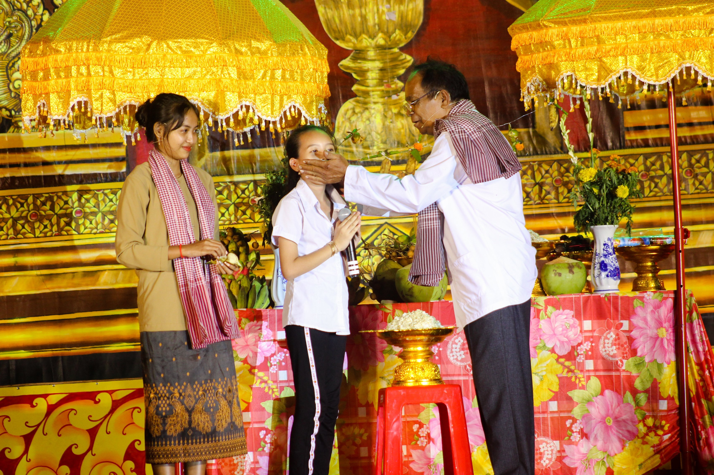
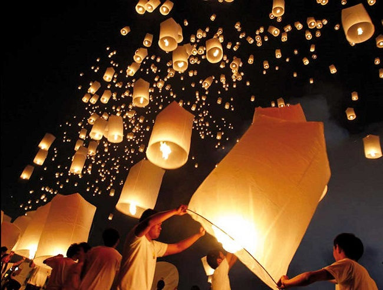
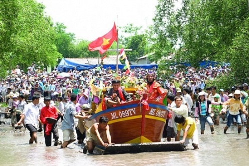
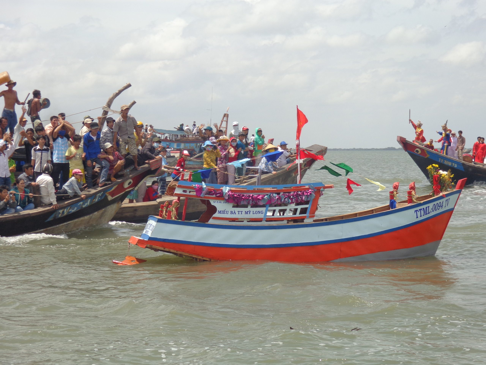

Văn hóa Trà Vinh
Có thể thấy “Lễ hội” văn hóa của các đồng bào dân tộc ở Trà Vinh là một hệ thống di sản mang nhiều giá trị văn hóa – lịch sử lâu đời với nhiều nét đặc thù, độc đáo của văn hóa địa phương. Mỗi một lễ hội diễn ra đều thể hiện sự phong phú về đời sống tinh thần và nét đẹp tâm hồn của các đồng bào dân tộc Trà Vinh. Phản ánh rất thực đời sống, sinh hoạt, tâm tư tình cảm của họ. Lễ hội cũng chính là hình thức giáo dục thể hiện tư tưởng đạo đức nhân văn cao cả, giáo dục đạo lý, ý thức cố kết cộng đồng trong công cuộc xây dựng nền văn hóa của dân tộc cũng như xây dựng cuộc sống và góp phần xây dựng nền “văn hóa Việt Nam tiên tiến đậm đà bản sắc văn hóa dân tộc.
Chôl Chnam Thmây – Hội mừng năm mới
Chôl Chnăm Thmây (hoặc Chaul Chnam Thmay) là lễ hội mừng năm mới theo lịch cổ truyền của dân tộc Khmer. “Chôl” nghĩa là “Vào” và “Chnăm Thmay” là “Năm Mới”. Hằng năm, lễ hội thường diễn ra vào khoảng giữa tháng Tư Dương lịch, bao gồm nhiều nghi lễ truyền thống và trò chơi dân gian. Chôl Chnăm Thmây là lễ hội lớn nhất trong năm của người dân Campuchia và của hơn 1,3 triệu đồng bào dân tộc Khmer Việt Nam.
Nguồn gốc của lễ hội Chôl Chnăm Thmây được lý giải bằng truyền thuyết liên quan đến câu chuyện chuyển giao tôn giáo từ Bà La Môn giáo sang Phật giáo, xoay quanh cuộc đấu trí giữa Đại Phạm Thiên (Kabul Maha Prum) và cậu bé thông minh Thom Ma Bal, một tiền kiếp của đức Phật.
Lễ hội Ok Om Bok
Lễ hội Ok Om Bok hay Oóc om bóc (tiếng Khmer: អកអំបុក) hay lễ Cúng Trăng. Là một trong những lễ hội lớn trong năm của đồng bào Khmer bên cạnh các lễ như Tết cổ truyền Chol Chnam Thmay, lễ cúng ông bà Sene Dolta,... Về mặt chữ nghĩa, Ok Om Bok có nghĩa là "Đút cốm dẹp bằng cách bốc bằng tay". Vì thế, lễ hội này còn có tên gọi khác là lễ hội Đút cốm dẹp.
Lễ Ok Om Bok có nguồn gốc xuất phát từ việc làm nông của người dân. Theo quan niệm của người Khmer, mặt trăng được xem là vị thần cai quản thời tiết, điều tiết mùa màng trong năm. Vì thế, sau khi mùa mưa kết thúc, người dân sẽ thực hiện tổ chức lễ hội Ok Om Bok để tạ ơn thần Mặt trăng đã bảo vệ mùa màng, đem mưa thuận gió hòa để mùa màng được bội thu. Đồng thời còn giúp họ cầu nguyện để có thể bội thu mùa vụ tới
Trong lễ hội Ok Om Bok, một trong những hoạt động sôi nổi và náo nhiệt được người dân mong đợi nhất là hội “đua ghe ngo". Ghe ngo một loại thuyền độc mộc lớn , khoét từ thân gỗ tốt, hình thoi, dài mũi và lái cong được trang trí sặc sỡ do các trai trái từ các phum, sóc đua tài. Đua ghe ngo trở trở thành ngày hội lớn để cư dân địa phương, du khách vui chơi, thưởng thức cái đẹp, cái khỏe mạnh, hào hùng, tài nghệ của các tay đua tranh tài trên vùng sông nước Trà Vinh.

Vu Lan thắng hội – Lễ hội báo hiếu
Vu Lan thắng hội – Lễ hội báo hiếu. Hay còn được gọi là hội chùa ông Bổn, được người dân tổ chức hàng năm vào ngày 25 đến 28 tháng 7 âm lịch. Vu Lan thắng hội được tổ chức tại Vạn Niên Phong Cung (chùa Chợ) tọa lạc tại khóm 1, thị trấn Càu Kè, huyện Cầu Kè, tỉnh Trà Vinh. Lễ hội này gắn liền với tín ngưỡng thờ ông Bổn của nơi đây và cũng là nét văn hóa tiêu biểu đặc sắc của người Triều Châu đến Trà Vinh an cư lạc nghiệp. Ông Bổn có tên thật là Trịnh Tu Hòa, vốn là một vị thái giám được nhà Minh cử sang thương thuyết nhằm mục đích thuyết phục các nước Đông Nam Á mở cửa tạo điều kiện để người Hoa sang sinh sống và làm ăn. Sau khi mất, ông được ban sắc phong thần và trở thành vị thần cai quản an cư lạc nghiệp cửa người Hoa. Chính vì vậy, đây cũng là một lễ hội truyền thống của người Hoa tại Trà Vinh.

Lễ hội chùa ông Bổn được tổ chức vào dịp Vu Lan báo hiếu nên trở thành dịp báo hiếu và cầu an. Trong lễ hội này điễn ra rất nhiều nghi thức phong phú như: rước Phật, thỉnh Kinh, lễ Khai kinh, Đăng đàn thí thực, lễ Xá hạc, lễ Cầu quốc thái dân an, lễ Tế Tiên hiền – Hậu hiền, lễ Cầu siêu, lễ Giương phan… Các lễ hội chính là dịp dung hợp văn hóa của người Kinh, Hoa và Khmer; Cũng là nét hoạt động văn hóa đặc sắc và đầy tính tín ngưỡng truyền thống của người dân Trà Vinh.

Nghinh Ông – Lễ cúng biển
Nghinh Ông – Lễ cúng biển. Là một lễ hội dân gian truyền thống tiêu biểu của cộng đồng cư dân người Kinh sinh sống bằng nghề hạ bạc trên vùng đất ven biển Trà Vinh. Lễ hội Cúng biển diễn ra vào hai ngày 11 và 12 tháng 5 âm lịch hàng năm tại ngôi miếu thờ Bà Chúa Xứ. Lễ được chia thành sáu phần chính: đi nghinh Nam Hải bằng ghe biển, giỗ tiền chức, chánh tế, chánh tế Bà Chúa xứ, đi nghinh ngũ phương, tống tàu ra khơi.
Đây là lễ hội thể hiện lòng biết ơn của ngư dân đối với đức Ông, đối với biển cả về một mùa đi biển đã qua và xua đuổi mọi xui rủi, tai ương và cầu cho mùa biển sắp tới mưa thuận gió hòa, sóng yên biển lặng, công việc đánh bắt hải sản gặp nhiều hanh thông, thuận lợi. Cúng biển Mỹ Long là một hoạt động văn hóa truyền thống gắn với tín ngưỡng thờ Cá voi được người dân thị trấn Mỹ Long bảo tồn và thực hiện liên tục trong gần một thế kỷ đã qua. Qua từng năm, lễ hội này được tiến hành một cách trọng thể, quy củ hơn, thu hút đông đảo hơn người dân trong, ngoài tỉnh và là dịp để những người con của quê hương đang định cư, làm ăn, sinh sống ở nước ngoài tìm về cội nguồn, thăm lại quê cha đất tổ. Đây cũng là dịp để mọi người dân trải nghiệm, chứng kiến và tìm hiểu về lễ hội độc đáo này của Trà Vinh.
Lễ hội truyền thống một loại hình sinh hoạt văn hóa dân gian tổng hợp, vừa độc đáo, vừa phong phú. Đây là hình ảnh thu nhỏ của nền văn hóa dân gian, với các hình thức văn học, nghệ thuật biểu diễn, tôn giáo, phong tục và tín ngưỡng (nghi lễ, nghi thức, trò chơi, trò diễn dân gian, tục lệ, thờ cúng, đức tin…) ở Trà Vinh. Lễ hội gắn bó với làng xã, địa danh, vùng đất Trà Vinh như một thành tố không thể thiếu vắng, nhằm thỏa mãn nhu cầu tâm linh và củng cố ý thức cộng đồng của địa phương.